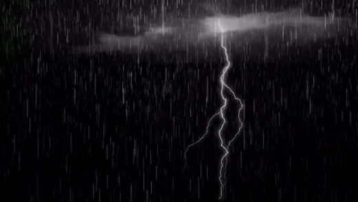

THE-NIGHT-SKY

The night sky is a breathtaking sight that has captivated
humanity for centuries.
When the sun sets and the darkness takes over, a whole new world appears above us.
The stars twinkle like diamonds on a dark velvet canvas, creating a mesmerizing and mystical
atmosphere.
The moon, sometimes full and bright, other times just a sliver, adds to the beauty of the night
sky.
Gazing up at the stars can make us feel small and insignificant in the vastness of the universe,
yet also connected to something larger than ourselves.
The night sky has been a source of inspiration for artists, poets, and scientists alike, and
continues to fascinate us with its mystery and wonder.